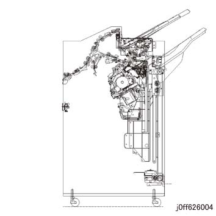
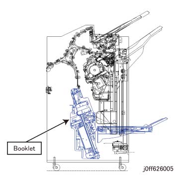

6.2.7.6 装订器 D6 Basic 配置 
以下 three types 是 prepared at 装订器 D6 shipment.
Base 装订器:
此 comes 和/与 a 堆叠器 纸盘 和 a 顶部 纸盘 该 supports 装订针 输出.

(图 1) ff626004
顶部 纸盘 (容量: 500 纸张)
纸张 堆叠
Z 折叠 半/一半 纸张 堆叠 (当...时 折叠器 选件 is 已选择)
Punched 纸张 堆叠 (当...时 打孔 选件 is 已选择)
Vertically trimmed 纸张 堆叠, creased 纸张 堆叠 (wen TCBM 选件 is 已选择)
堆叠器 纸盘 (容量: 3000 纸张, 和/与 偏移 特性)
纸张 堆叠
设置 堆叠 当...时 Unstapled (最大. 25 纸张 每 设置)
设置 堆叠 当...时 Stapled (前面, Dual, 后面, 中央) (最大. 100 纸张 每 设置)
Z 折叠 半/一半 纸张 堆叠 (当...时 折叠器 选件 is 已选择)
Punched 纸张 堆叠 (当...时 打孔 选件 is 已选择)
小册子 装订器:
The 小册子 单元, 哪个 supports 中央-装订 小册子 (Saddle 装订/中央 折叠) 和 单面/单个 折叠, is a 标准 设备 该 已安装 到 Base 装订器 和/与 Stapler described in (1). 方背折叠裁切器 可以 connected.

(图 2) ff626005
顶部 纸盘 (容量: 500 纸张)
纸张 堆叠
Z 折叠 半/一半 纸张 堆叠 (当...时 折叠器 选件 is 已选择)
Punched 纸张 堆叠 (当...时 打孔 选件 is 已选择)
Vertically trimmed 纸张 堆叠, creased 纸张 堆叠 (wen TCBM 选件 is 已选择)
堆叠器 纸盘 (容量: 2000 纸张, 和/与 偏移 特性)
纸张 堆叠
设置 堆叠 当...时 Unstapled (最大. 25 纸张 每 设置)
设置 堆叠 当...时 Stapled (前面, Dual, 后面, 中央) (最大. 100 纸张 每 设置)
Z 折叠 半/一半 纸张 堆叠 (当...时 折叠器 选件 is 已选择)
Punched 纸张 堆叠 (当...时 打孔 选件 is 已选择)
小册子纸盘 (容量: 20 设置 of 16-纸张 小册子)
Bi-折叠 (单面/单个 折叠 用于 1 纸张 of 纸张/Unstapled)
单面/单个 折叠 (折叠 用于 2- to 5-纸张 Booklets)
中央-装订 装订针 (2 bind 和 折痕 processing 用于 2- to 30-纸张 Booklets)
所有 of (1), (2), 和 (3) 具有 a built-in 消卷器 单元, 哪个 reforms the curled 纸张 输出 从 IOT, 和 Stapler 该 可以 执行 stapled cutting. In addition, the 打孔单元, 哪个 可以 打孔 2/3 holes or 2/4 holes, the IP, 哪个 传输 盖板 纸张 to 装订器 to 加上 Covers to 中央-装订 Booklets, 和 折叠器, 哪个 可以 执行 Z 折叠 半/一半 纸张, C 折叠, 和 Z 折叠, 可以 added.